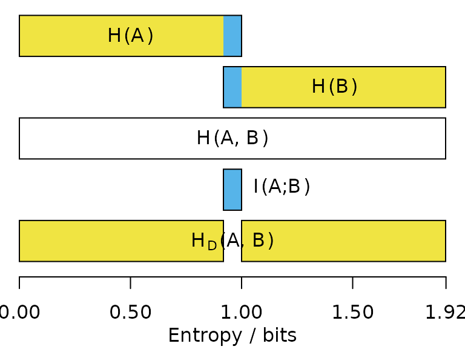

vignettes/information.Rmd
information.RmdTo understand the information-based metrics implemented in ‘TreeDist’, it is useful to recall some basic concepts of information theory.
For an introduction, see MacKay (2003) or an introductory video to the clustering information distance:
Each internal edge in a tree represents a split that divides its leaves into two partitions. Intuitively, some splits are more instructive than others. For example, the fact that mammals and reptiles represent two separate groups is profound enough that it is worth teaching to schoolchildren; much less information is represented by a split that identifies two species of bat as more closely related to one another than to any other mammal or reptile.
How can we formalize the intuition that some splits contain more information than others? More generally, how can we quantify an amount of information?
Information is usually measured in bits. One bit is the
amount of information generated by tossing a fair coin: to record the
outcome of a coin toss, I must record either a H or a
T, and with each of the two symbols equally likely, there
is no way to compress the results of multiple tosses.
The Shannon (1948) information content of an outcome \(x\) is defined to be \(h(x) = -\log_2{P(x)}\), which simplifies to \(\log_2{n}\) when all \(n\) outcomes are equally likely. Thus, the outcome of a fair coin toss delivers \(\log_2{2} = 1\textrm{ bit}\) of information; the outcome of rolling a fair six-sided die contains \(\log_2{6} \approx 2.58\textrm{ bits}\) of information; and the outcome of selecting at random one of the 105 unrooted binary six-leaf trees is \(\log_2{105} \approx 6.71\textrm{ bits}\).
Unlikely outcomes are more surprising, and thus contain more
information than likely outcomes. The information content of rolling a
twelve on two fair six-sided dice is \(-\log_2{\frac{1}{36}} \approx 5.16\textrm{
bits}\), whereas a seven, which could be produced by six of the
36 possible rolls (1 & 6, 2 & 5, …),
is less surprising, and thus contains less information: \(-\log_2{\frac{6}{36}} \approx 2.58\textrm{
bits}\). An additional 2.58 bits of information would be required
to establish which of the six possible rolls produced the seven.
The split \(S_1 =\)
AB|CDEF is found in 15 of the 105 six-leaf trees; as such,
the probability that a randomly drawn tree contains \(S_1\) is \(P(S_1)
= \frac{15}{105}\), and the information content \(h(S_1) = -\log_2{\frac{15}{105}} \approx
2.81\textrm{ bits}\). Steel & Penny
(2006) dub this quantity the phylogenetic information
content.
Likewise, the split \(S_2 =\)
ABC|DEF occurs in nine of the 105 six-leaf trees, so \(h(S_2) = -\log_2{\frac{9}{105}} \approx
3.54\textrm{ bits}\). Three six-leaf trees contain both splits,
so in combination the splits deliver \(h(S_1,S_2) = -\log_2{\frac{3}{105}} \approx
5.13\textrm{ bits}\) of information.
Because \(h(S_1,S_2) < h(S_1) + h(S_2)\), some of the information in \(S_1\) is also present in \(S_2\). The information in common between \(S_1\) and \(S_2\) is \(h_{shared}(S_1, S_2) = h(S_1) + h(S_2) - h(S_1,S_2) \approx 1.22\textrm{ bits}\). The information unique to \(S_1\) and \(S_2\) is \(h_{different}(S_1,S_2) = 2h(S_1,S_2) - h(S_1) - h(S_2) \approx 3.91\textrm{ bits}\).
These quantities can be calculated using functions in the ‘TreeTools’ package.
library("TreeTools", quietly = TRUE)
library("TreeDist")
treesMatchingSplit <- c(
AB.CDEF = TreesMatchingSplit(2, 4),
ABC.DEF = TreesMatchingSplit(3, 3)
)
treesMatchingSplit## AB.CDEF ABC.DEF
## 15 9
proportionMatchingSplit <- treesMatchingSplit / NUnrooted(6)
proportionMatchingSplit## AB.CDEF ABC.DEF
## 0.14285714 0.08571429
splitInformation <- -log2(proportionMatchingSplit)
splitInformation## AB.CDEF ABC.DEF
## 2.807355 3.544321
treesMatchingBoth <- TreesConsistentWithTwoSplits(6, 2, 3)
combinedInformation <- -log2(treesMatchingBoth / NUnrooted(6))
sharedInformation <- sum(splitInformation) - combinedInformation
sharedInformation## [1] 1.222392
# Or more concisely:
SplitSharedInformation(n = 6, 2, 3)## [1] 1.222392Entropy is the average information content of each outcome, weighted by its probability: \(\sum{-p \log_2(p)}\). Where all \(n\) outcomes are equiprobable, this simplifies to \(\log_2{n}\).
Consider a case in which Jane rolls a dice, and makes two true statements about the outcome \(x\):
\(S_1\): “Is the roll even?”.
\(S_2\): “Is the roll greater than 3?”
The joint entropy of \(S_1\) and \(S_2\) is the entropy of the association matrix that considers each possible outcome:
| \(S_1: x\) odd | \(S_1: x\) even | |
|---|---|---|
| \(S_2: x \le 3\) | \(x \in {1, 3}; p = \frac{2}{6}\) | \(x = 2; p = \frac{1}{6}\) |
| \(S_2: x > 3\) | \(x = 5; p = \frac{1}{6}\) | \(x \in {4, 6}; p = \frac{2}{6}\) |
\(\begin{aligned} H(S_1, S_2) = \frac{2}{3}\log_2{\frac{2}{3}} + \frac{1}{3}\log_2{\frac{1}{3}} + \frac{1}{3}\log_2{\frac{1}{3}} + \frac{2}{3}\log_2{\frac{2}{3}} \approx 1.84 \textrm{ bits} \end{aligned}\)
Note that this less than the \(\log_2{6} \approx 2.58\textrm{ bits}\) we require to determine the exact value of the roll: knowledge of \(S_1\) and \(S_2\) is not guaranteed to be sufficient to unambiguously identify \(x\).
The mutual information between \(S_1\) and \(S_2\) describes how much knowledge of \(S_1\) reduces our uncertainty in \(S_2\) (or vice versa). So if we learn that \(S_1\) is ‘even’, we become a little more confident that \(S_2\) is ‘greater than three’.
The mutual information \(I(S_1;S_2)\), denoted in blue below, corresponds to the sum of the individual entropies, minus the joint entropy:
\[\begin{aligned} I(S_1;S_2) = H(S_1) + H(S_2) - H(S_1, S_2) \end{aligned}\]If two statements have high mutual information, then once you have heard one statement, you already have a good idea what the outcome of the other statement will be, and thus learn little new on hearing it.
The entropy distance, also termed the variation of information (Meila, 2007), corresponds to the information that \(S_1\) and \(S_2\) do not have in common (denoted below in yellow):
\[\begin{aligned} H_D(S_1, S_2) = H(S_1, S_2) - I(S_1;S_2) = 2H(S_1, S_2) - H(S_1) - H(S_2) \end{aligned}\]The higher the entropy distance, the harder it is to predict the outcome of one statement from the other; the maximum entropy distance occurs when the two statements are entirely independent.

A split divides leaves into two partitions. If we arbitrarily label these partitions ‘A’ and ‘B’, and select a leaf at random, we can view the partition label associated with the leaf. If 60/100 leaves belong to partition ‘A’, and 40/100 to ‘B’, then the a leaf drawn at random has a 40% chance of bearing the label ‘A’; the split has an entropy of \(-\frac{60}{100}\log_2{\frac{60}{100}}-\frac{40}{100}\log_2{\frac{40}{100}} \approx 0.97\textrm{ bits}\).
Now consider a different split, perhaps in a different tree, that
assigns 50 leaves from ‘A’ to a partition ‘C’, leaving the remaining 10
leaves from ‘A’, along with the 40 from ‘B’, in partition ‘D’. This
split has \(-\frac{50}{100}\log_2{\frac{50}{100}}-\frac{50}{100}\log_2{\frac{50}{100}}
= 1\textrm{ bit}\) of entropy.
Put these together, and a randomly selected leaf may now bear one of
three possible labellings:
The two splits thus have a joint entropy of \(-\frac{50}{100}\log_2{\frac{50}{100}} -\frac{10}{100}\log_2{\frac{10}{100}} -\frac{40}{100}\log_2{\frac{40}{100}} \approx 1.36\textrm{ bits} < 0.97 + 1\).
The joint entropy is less than the sum of the individual entropies because the two splits contain some mutual information: for instance, if a leaf bears the label ‘B’, we can be certain that it will also bear the label ‘D’. The more similar the splits are, and the more they agree in their division of leaves, the more mutual information they will exhibit. I term this the clustering information, in contradistinction to the concept of phylogenetic information discussed above.
More formally, let split \(S\) divides \(n\) leaves into two partitions \(A\) and \(B\). The probability that a randomly chosen leaf \(x\) is in partition \(k\) is \(P(x \in k) = \frac{|k|}{n}\). \(S\) thus corresponds to a random variable with entropy \(H(S) = -\frac{|A|}{n} \log_2{\frac{|A|}{n}} - \frac{|B|}{n}\log_2{\frac{|B|}{n}}\) (Meila, 2007). The joint entropy of two splits, \(S_1\) and \(S_2\), corresponds to the entropy of the association matrix of probabilities that a randomly selected leaf belongs to each pair of partitions:
| \(S_1: x \in A_1\) | \(S_1: x \in B_1\) | |
|---|---|---|
| \(S_2: x \in A_2\) | \(P(A_1,A_2) = \frac{|A_1 \cap A_2|}{n}\) | \(P(B_1,A_2) = \frac{|B_1 \cap A_2|}{n}\) |
| \(S_2: x \in B_2\) | \(P(A_1,B_2) = \frac{|A_1 \cap B_2|}{n}\) | \(P(B_1,B_2) = \frac{|B_1 \cap B_2|}{n}\) |
\(H(S_1, S_2) = P(A_1,A_2) \log_2 {P(A_1,A_2)} + P(B_1,A_2) \log_2 {P(B_1,A_2)}\)
\(+ P(A_1,B_2)\log_2{P(A_1,B_2)} + P(B_1,B_2)\log_2{P(B_1,B_2)}\)
These values can then be substituted into the definitions of mutual information and entropy distance given above.
As \(S_1\) and \(S_2\) become more different, the disposition of \(S_1\) gives less information about the configuration of \(S_2\), and the mutual information decreases accordingly.